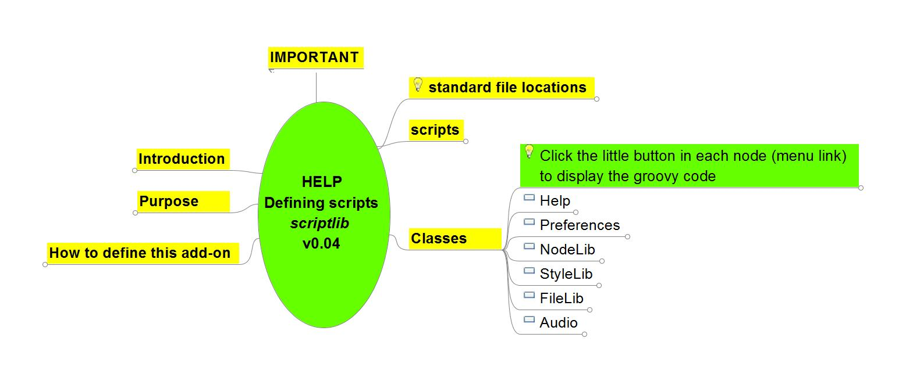

- What is an Add-on?
- Installing an add-on
- Edit
- Navigate
- Problem solving
- Plan and organize
- Images and icons
- Collaborate
- Import and export
- Others
- For developers
What is an Add-on?
Add-ons are a way to extend and customize Freeplane similar to how plug-ins and extensions can be used to extend and customize well-known applications like Firefox or LibreOffice. Freeplane add-ons can be used to provide a single function, a bundle of multiple functions, bind those functions to a menu item, and much more.
Anybody can write an add-on! (see the add-on developer documentation)
note: add-ons are not necessarily provided by the Freeplane core developers.
Installing an add-on
An add-on is a Freeplane mind map with the special additional suffix
If Freeplane is not the designated program to open '.mm' files and for Freeplane versions before v1.2.10_05, follow this procedure:
- In Freeplane, select Tools > Add-ons > Search add-ons > Visit add-on page
- Search for your add-on and choose download
- Save the add-on on your computer (for example, on your desktop)
- Select Tools > Addons > Search and install
- Select directory icon
- Find and select the file you just downloaded (for example, on your desktop)
- Select Install
- Restart Freeplane
You will now find the new command in the menu. For example, "Insert Inline Image" can be found under Edit->Node extensions with the shortcut Ctrl+Shift+i.)
Add-ons are listed below.
Edit
wikdNode
by L. C. Rees, maintainer Volker Börchers
Node wrangling features for Freeplane:
- Case
- capitalize first word in node core text
- capitalize all words in node core text
- upper case node core text
- lower case node core text
- Delete
- delete first chosen characters from node core text
- delete first characters matching a regular expression from node core text
- delete last chosen character from node core text
- delete last characters matching a regular expression from node core text
- delete links on multiple nodes
- Split
- split node core tex into multiple nodes on periods
- split node core text into multiple nodes on commas
- split node core text into multiple nodes on spaces
- split node core text into multiple nodes on one or more chosen characters...
- split node core text into multiple nodes before one or more chosen characters...
- split node core text into multiple nodes on characters that match a regular expression...
- split node core text into multiple nodes before characters that match a regular expression...
- splits node core text after one or more chosen characters
- splits node core text after characters matching a regular expression
- Join
- join node core text of multiple nodes with spaces
- join node core text of multiple nodes with commas
- join node core text of multiple nodes with periods
- join node core text of multiple nodes with one or more chosen characters
- Other
- copy node core text as a new child of the node
- replace parent node core text with the core node text of one of its children
- convert parent node attributes to node children
- convert node children to parent node attributes
Download v0.8.0 from Github (with Java speedups)
Note: previous version of widkNode needed addition of 'scripts' to the script classpath in Freeplane's preferences. Please undo that before installing 0.8 and later
Source: Github
Navigate
MapInsight
by ADXSoft (Allan)
Freeplane Add-on for exploring maps and connecting idea
MapInsight addon provides a simple UI for walking around a map and optionally creating connectors
Using a lot of connectors, a map can get very confusing. This simple UI gives the view from a selected node showings its parent, children, connectors in and out. Hovering over a node in the UI reveals the notes and details.
Connection Candidates tool finds possible connections through link words, phrases or regular expressions and allows you to create the connector
Connection Manager shows all connectors in the map in a sortable table with edit/delete options
Video demonstration https://www.youtube.com/watch?v=cSyhkcsB2-M (made before the script was converted to an add-on but demonstrates the functionality of the import)
Add-on is located at https://github.com/adxsoft/MapInsight-Addon
Navigation
'''by Jodi D. Krol
Scroll leaves to visible
Performs two actions:
- Folds/unfolds the selected node
- On unfolding moves (grand)children into the screen area.
Does not (un)fold (grand)children. The action is performed recursively for al children. As a result the last child may cause the previous child to be moved outside the screen area. This behaviour may be influenced by folding the (other) children.
Demote to upper sibling
Moves each selected node to upper sibling and appends as child.
Download navigation 0.3
Installing the addon adds method Scroll leaves to visible and method Demote to upper sibling to menu Tools>scripts.
 Jumper
Jumper
by lilive
A fully keyboard driven search box for quick navigation in maps. It filters the nodes on-the-fly as the user types the search terms, and allows to jump to one of the results.
Jumper, the Jumping Filter, provides an easy and quick way to search for nodes in Freeplane maps. Press Jumper keyboard shortcut, type some text snippets, and you will instantly see all the nodes (or branches !) that contain them in the Jumper window. Select one of these nodes to select it in the map.
Some features:
- Search results updated as you type
- Matching text is highlighted in the results list
- Regular search or transversal search (find words or text snippets across a branch)
- Words or text snippets can be searched in any order
- Search in any part of the nodes (core text, details, notes, attributes)
- Plain text or regular expressions search, case sensitive or insensitive
Find all Jumper features, usage instructions and download here.
 Bookmarks
Bookmarks
by lilive
This add-on allows to bookmark some nodes in a Freeplane map, and to easily navigate between them.
Available in french and english. Le module Marque-pages est disponible en français et en anglais.
You can download it from its github page.
Problem solving
FreeIBIS
by L. C. Rees, maintainer Henk van den Akker
Issue-Based Information System for Freeplane, supporting coordination and planning of political decision processes, sensemaking and collaborative problem solving in a variety of social and technical contexts.
In the README file on the FreeIBIS Github page you can find information about the usage of this add-on.
Plan and organize
 Freeplane|GTD
Freeplane|GTD
This add-on enables using a mind map as a 'trusted system' in the Getting Things Done (GTD) methodology.
The hierarchical nature of a mind map is ideal for tracking projects, their associated tasks, and next actions.
Features:
- Extracts Next Action lists from nodes marked with a next action icon
- Displays lists sorted by Project, Context, Waiting-For, or Due Dates
- Accepts a simple, natural shorthand notation for entering Next Actions
- Next Actions in lists are hyperlinked back to the GTD mind map for easy editing
See here for more details.
 Freeplane|GTD+
Freeplane|GTD+
A generic task management add-on, with a special focus in supporting the Getting Things Done (GTD) methodology.
The hierarchical nature of a mind map is ideal for tracking projects, their associated tasks, and next actions.
Based on the original Freplane|GTD add-on, this add-on takes working with your tasks to the next level.
Features:
- Extracts Next Action lists from nodes marked with a next action icon
- Displays lists sorted by Project, Context, Waiting-For, or Due Dates
- Accepts a simple, natural shorthand notation for entering Next Actions
- Next Actions in lists are hyperlinked back to the GTD mind map for easy editing
New features:
- Allow marking tasks as done, and optionally hiding them from the task list
- Automatic Icon to Context transformation, based on your preferences
- Allow setting task priorities from shorthand, or the number icons
- Advanced copy to clipboard function to copy all or or grouped (Project/Context/Responsible/Duedate) actions as simple text, formatted text/HTML and as freeplane nodes
- Select function to select all or grouped (Project/Context/Responsible/Duedate) tasks in the mindmap
See here for more details.
GTD Sync
Groovy script to synchronise a Freeplane|GTD mind map with todo.txt. The catch is that you can make your Next Action list available to other applications and systems. For example, you can use Dropbox to distribute todo.txt and use SimpleTask for Android to consult and maintain todo.txt. What does GTD sync do?
- It imports new next actions from todo.txt to your GTD mind map under node 'New'.
- It updates existing next actions in your GTD mind map with the changes made in todo.txt since last synchronisation. This includes changing the status to completed.
- In case a next action is changed in both todo.txt and the GTD mind map, the attributes changed in todo.txt are logged, so after the synchronisation you are able to check whether any manual update is necessary.
- After the GTD mind map is updated with all new and changed next actions in todo.txt, all its next actions will be exported to todo.txt. The export does not include completed next actions.
For further information consult the wiki or the Quick Start mind map (Shift+F1) provided with the add-on.
For Freeplane 1.8.9 and higher: download the latest version of GTD Sync.
For upgrade information and Freeplane version compatibility read the README file
 Freeplane|WBS
Freeplane|WBS
It aggregates the costs and durations for a task tree. It also assigns codes to each task in a doted form for later reference.
You should consider the root of the map as the project root, and each node as a task.
Study Planner
Study Planner will help in better organization of learning.
It is designed for pupils and students in planning everyday school extracurricular activities and obligations.
Important functions of Study Planner are:
- organization of subjects and activities by day
- organization of activities by time of learning
- the ability to determine the type of activities
- countdown learning
- creating lists of activity by Day, by Subject, by Type of activity, by Period of learning
- copying list
- print list
- more icons
For more information see this page
Images and icons
 Insert Inline Image
Insert Inline Image
by Volker Börchers, Rickenbroc
This add-on is a convenient way to add images on the fly in your maps. The images can come from :
- a file from your computer,
- the clipboard : file path or a copy (like a screenshot),
- an url from the internet
You can resize the display (with a preview pane) and put it in :
- node core
- node details
- note
- node extension
You can even decorate the image inserted with a link which point wherever you would want.
Download v1.1 for Freeplane v1.8.0 and higher
Download v1.0 for Freeplane v1.2.10 to v1.7.x
 Old Icons Theme
Old Icons Theme
This little theme add-on installs the old (pre 1.2.9) link icons (Link.png and LinkLocal.png).
Palm Icons
by Steve Kunkel
Free Palm Os Icons categorized by groups Office, Home.... for Freeplane.
Compiled by Steve Kunkel and converted to an Add-on by Predrag. For artist information, see this forum post.
 User Icons
User Icons
This add-on adds standard Freeplane icons under User icons in bigger size (24 px) and adds other icons (computer, more office icons...).
Collaborate
 Roan-Presentation
Roan-Presentation
by Jodi D. Krol
RoAn-Presentation provides a combination of mind mapping with Powerpoint- and Prezi like presentation, using automatic filtering and zooming.
Stepping the presentation not only unfolds nodes, but also displays hidden details, centers the current node, executes the named filters which may be connected to each node and more. In short it supports traversing a mind map, taking over abundant clicking from the user.
Besides traversing the mindmap depth first, it is possible to define scenes and scenario's for traversing in any order.
The included Help file which itself is an example which can be played or stepped as well. The Help file also contains links to example maps and videos which can be downloaded.
Besides functionality for presenting, RoAn may automatically add nodes with links to all folders and files in the directory of the mind map (indexing). As a choice image files may be displayed as inline images. This functionality is more basic than in addon diView(indexfile), but more easy to use.
Installing the add-on results in a new menu Tools> RoAn-Presentation. This menu contains a submenu "Menu" which opens a window with presentation and edit buttons. One of the buttons will open the Help file. Once menu RoAn is used on a mind map, a little button is added to the root to open RoAn's menu with a click next time.
Download roan-presentation 0.2.1 for Freeplane 1.5.
Download roan-presentation 0.1.3 for Freeplane 1.3.
 Translation
Translation
Utilities for automatic translation of maps and language resources that use the mymemory translation service. Of most interest for Freeplane translators.
The scripts still have some limitations:
- Text size per node/text is limited to 1000 characters.
- Translation time growths mainly with the number of texts/nodes. No optimization for the case of many small texts.
Collaborative tools
This add-on is no longer maintened (not tested under freeplane 1.5).
Collaborative tools provides some scripts to ease team working on a single map.
It requires a working versionning system, CVS, SVN and GIT are supported.
Once installed, you can execute the following commands inside freeplane
- diff your mindmap (F10)
- update your mindmap (F11)
- publish your mindmap (F12)
Feedback and contributions are welcome.
Import and export
 Pack & Go
Pack & Go
Pack and Go provides a function to pack a map with all its dependencies into one zip file.
All files have to be loaded into the RAM so be prepared to increase Java heap space if you get a "Out Of Memory" Error.
Import OPML to selected node
by ADXSoft (Allan)
Freeplane Add-on for importing OPML files
OPML is a popular export format for mind maps and OPML has nodes recorded in outline tags.
Within each outline tag is
- a text attribute which is the node title
- a _note attribute which is the note related to the node. This may or may not be present
- optionally, a richcontent tag with html content
This script will import the nodes and their related notes and richcontent into Freeplane as follows
- an outline tag's text attribute will import into a node core's text
- a _note attribute (not always present) will import into the nodes note text
- a richcontent tag's contents, if present, will import as html into the node details text
Video demonstration https://youtu.be/hUagckdoeNATo (made before the script was converted to an add-on but demonstrates the functionality of the import)
Add-on is located at https://github.com/adxsoft/ImportOPMLtoselectednode.addon
Others
SmartLocker
by Jodi D. Krol
SmartLocker provides a secure repository integrated within a freeplane mind map.
Besides it can generate a secure password, automatically login to a website and open multiple sites in one click.
Its typical use is illustrated in the video's below.
After downloading and installing SmatLocker's menu appears in menu Tools > SmartLocker. This menu contains extensive help, both local and online, and in addition to the local help provided in tooltips. It contains documentation describing all system nodes and preferences which can be set for these nodes through menu Tools > Preferences > SmartLocker. It describes how you can translate SmatLocker's menu and help files, and share them through the freeplane wiki with other users. The Help file also contains a link to a map with predefined nodes for logging in to email providers, facefook etc. And it contains a node Illustration which contains documented nodes explaining the global architecture of SmartLocker (don't forget to to look inside the locker nodes). Finally, if you want to write your own scripts, the documentation contains a number of scripts you can simply import and use.
Download preview Smart Locker v0.2
IMPORTANT
After downloading, in Tools > Preferences > Plugins set:
- classpath: lib
- permit file/ read operation: true
dView(indexfile)
by Jodi D. Krol
The add-on dView(indexfile) supports adding annotations, hyperlinks and reminders to file names in a folder structure. For this a specialized dashboard mindmap must be put into the folder to index. When this dashboard is opened and button Index is pressed, a hierarchy of nodes with hyperlinks to the subfolders and files of the indexed folder is generated. Next one can add annotations, add hyperlinks to other files or websites, and add reminders (clock) for file related actions. If email adresses are registered, with one click all users of a particular dashboard can be sent a group-email. In case of image files, a preview can be displayed. The resulting mindmap can be shared with other users, which can navigate it without having to install the add-on. Hyperlinks to indexed files can be copied and pasted into an email. With special options set the add-on can be used with MS Sharepoint or on the internet, and/or be used to generate NATO-compliant file names.
Installing add-on dView(indexfile) results in a new menu Tools> dView(indexfile) with different dashboard types to choose from: basic, dossier, meeting, theme, organisation, person and folders, see the descriptions below. Besides it has an extensive Help.
The following functions can be used on any map:
- Copy selected hyperlinks to clipboard (F12), to paste with Ctrl-V in email, Word document, other html-based document
- Copy adresses of links in selected nodes to clipboard (F11), to paste with Ctrl-V
- Copy location of node in map (F10), to paste as link in node of different map (F9) See Help for details.
For a video and examples seeInformation management with add-on dView(indexfile).
'''Download dView(indexfile) 0.3.1
When opening and instaling the add-on:
- jar files scriptlib and indexfile are added to
/lib - template files are added to
/templates/indexfile - help files are added to
/doc - submenu IndexFile is added to menu Tools
See video with instructions for installation.
 Map Saving Options
Map Saving Options
by EdoFro
'Map Saving Options' is a Freeplane AddOn that gives you the possibility to add saving preferences to each of your maps.
This Add-on can be useful when working with Github or when comparing different versions of a mindmap file.
Find MapSavingOptions features, example images and usage instructions here
With this AddOn you can define if a map have to save the information of any of these:
- folded and unfolded nodes
- selected node when saving
- Creation and Modification times of each node
This way, you can define for each map if it will use the central Freeplane preferences, its own or a mix of both.
Download the latest release here
For developers
 Developer Tools
Developer Tools
This add-on collects some utilities that script and/or add-on developers will find useful.
- Build add-on: adds all standard nodes, attributes and notes to the current map. Can be used with an empty Map to create a basic add-on.
- Package add-on for release: It copies the
.mm to - .mm and updates the script node's context from the files lying around. - Generate add-on documentation: Creates a snippet for the Freeplane add-ons wiki page.
- Insert binary: Asks for a file to insert as text of the current node (BASE64 encoded).
- Extract binary: Asks for a file to extract the BASE64 encoded binary in the current node to.
- Encode translation: Encode non-ASCII characters so that they don't get scrambled while packaging or installation. This function is included in Package add-on for release so you don't need this function.
- Menu item info: Shows technical details about a selected menu item.
- freeplane.dsld: Adds Eclipse editor support for predefined script bindings such as node, c, ui, textUtils, ...
The functions are available under Tools -> Development Tools
For Freeplane 1.7.4 and higher: Download v0.9.26
For Freeplane 1.6.15 and higher: Download v0.9.23
For Freeplane 1.3.x and 1.5.x: Download v0.9.22
For Freeplane 1.2.x: Download v0.9.14
wikdShell
by L. C. Rees, maintainer Volker Börchers
Groovy console for interacting with a running Freeplane instance.
Scripts inside the console have the same variables that every script has assigned to, like node (the selected node when launching the shell) and c (the Controller). See the groovyconsole description for usage instructions.
Source: Github
For Freeplane 1.5.x: Download 0.3.0
For Freeplane 1.3.x and 1.2.x: Download 0.2.3
 scriptlib
by Jodi D. Krol
This add-on is aimed at starting developers. It:
- Provides a number of generic ready to use scripts (play audio, set bubble, set cloud etc.);
- Shows how to define local and online Help for add-ons (including translations);
- Shows how to share both binary and groovy code by means of an add-on;
- Shows how add-on scriptlib is defined, including defining menu items, preferences, default properties and translation; scripts and zips; and how the source of the add-on can itself be included in an add-on.
IMPORTANT: In Tools >Preferences > Plugins classpath must be set to: lib.
After installing the a menu Tools > Defining scripts is added. It opens two submenu's: Help and Help online. The former contains the help as provided when downloading scriptlib. The latter may contain a newer version of the help file, which is available without having to download a new version of scriptlib.